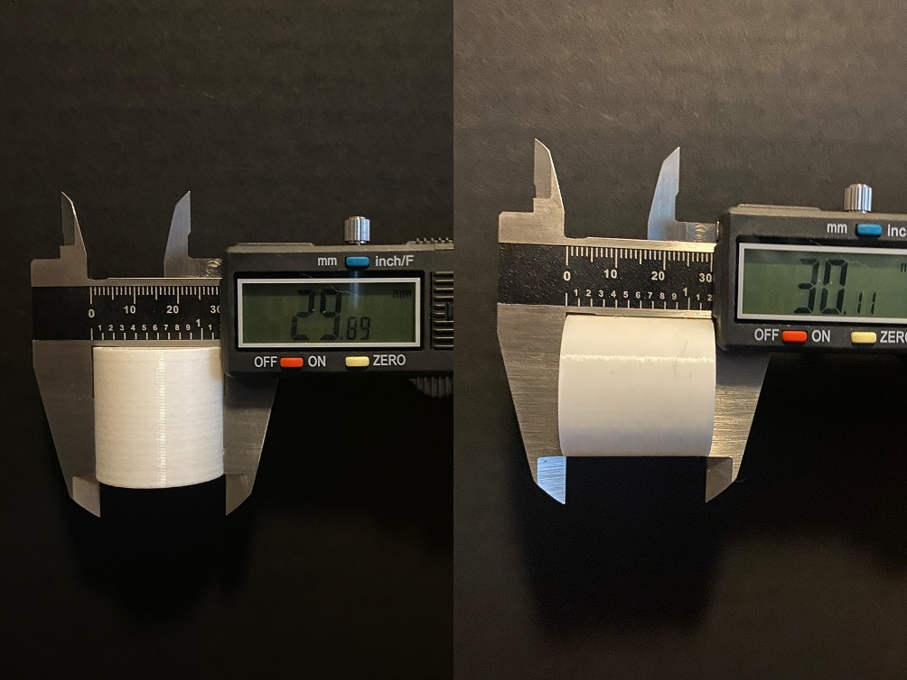

A3: Getting started with 3D printing
By Jessica Hord

Documentation
Assembly
I received my printer in the mail and my cats were curious about the box.
I sent Vanessa lot of text messages trying to figure out some of the instructions, but I was able to build it! It fits perfectly on my set of drawers next to my desk. Vanessa also sent me this Youtube video, which helped me troubleshoot some things.

I adjusted the extruder's eccentric nuts and checked for loose screws. I noticed that the roller wheels on the center belt were a bit loose, so I tightened the nut for that. I then preheated and placed the filament in. Then was ready for bed levelling.
Bed Levelling
I then conducted the bed leveling protocol from the assignment. I ran the paper test a few times to check and make sure it was all level. I then ran the actual square print, touching the lines to see if they’d move, and it came out perfectly on the first try! I couldn’t knock the lines off and they were visible lines without any squishing.
Test Prints
Cubes
I built my 3 CM cube in Rhino, exported the STL, and opened it in Cura. In Cura I selected my printer, checked the size of the cube, and set the print to low quality. I then hit “slice”, saved the file to my chip, and uploaded it to the printer.
Problem Solving
The cube was working perfectly, but the filament that came with the machine broke and ruined the print. The filament actually broke off in the tube, so I had to problem solve unclogging it. I preheated PLA, used the metal needle to make sure the nozzle wasn’t clogged, and used a fresh piece of filament to push the broken part through. I then ran another test print to make sure all of the broken filament had been pushed out. After that, I pulled the entire piece of filament out and replaced it with the better quality ProtoPlant filament to continue my prints. Then I ran another test print to make sure the filament was fed correctly.
Here is the first failed cube.
After that, it was smooth sailing. I’m going to include pictures of the cubes and not the Cura, since it was just the same file with different quality settings. I did a new bed level test print between each cube to make sure that everything was working. Before the super quality cube print, I noticed the filament was coming out differently, so I used the metal needle to make sure there weren’t any clogs, and it went back to normal.
3CM (30 MM) Low Quality Cube
Time: 52 Minutes
Actual Size: 29.98 mm W x 29.85 mm H
3CM (30MM) Standard Quality Cube
Time: 1 Hour 9 Minutes
Actual Size: 30.04 mm W x 29.89 mm H
3CM (30MM) Super Quality Cube
Time: 2 Hours 5 Minutes
Actual Size: 29.8 mm W x 30.1 mm H
I am a fan of standard quality because it is just a bit better than low quality but takes half the time of super.
I am also happy with the size that they came out. The biggest difference was only .2 MM different than the file. I spent a long time trying to assemble the printer right and make sure my bed leveling was accurate, it paid off! It was at this point I realized that my cubes did not have to be 3 CM, and could be 2 CM. So, I scaled the STL file down to 2 CM in Cura and made the top and bottom layers concentric.
2CM (20 MM) Standard Quality Cube, Concentric Top/Bottom
Time: 28 minutes
Actual Size: 19.87 mm W x 20.04 mm H
This one had the biggest difference in size from the file, with .23 mm difference on the width, but that is still under 1mm, so that’s great.
Tubes
I built both tubes in Rhino. One with a .4 mm wall thickness (single extrusion) and one with .8 mm wall thickness (double extrusion), since the my printer nozzle is .4mm.
I exported each individually as STLs, brought them into Cura, and individually adjusted their settings to make sure that there was a single extrusion (.4) and a double extrusion (.8) with a randomized z alignment. I then sliced them and printed them together to see if I could see the difference in how they were printing, and I could!
3CM (30MM) Low Quality Tubes, Single & Double Extrusion
Time: 27 minutes total
Single Extrusion Actual Size: 29.92 mm W x 30.01 mm H
Double Extrusion Actual Size: 29.93 mm W x 30.00 mm H

They printed out great! Here are side-by-sides so you can see the difference in the wall thickness and the z alignment. I prefer the single line z alignment.
Cylinders
By the time I got to the cylinders, I was feeling pretty comfortable with the process, so I printed 3 cylinders together. I created one 3CM cylinder in Rhino, exported one STL at .1 tolerance and one at .001 tolerance. I pulled both into Cura and placed them. I pulled in another copy of the .1 STL, rotated it, and added support in the individual settings in Cura as well. I printed all three of these together. You can really tell the difference between .1 and .001. I didn’t even notice how the other pieces weren’t a smooth cylinder until I printed the .001 tolerance cylinder.
3CM (30MM) Low Quality Cylinders | .1 Tolerance, .001 Tolerance, and .1 Tolerance Sideways with Supports
Time: 2 Hours 21 minutes total
.1 Tolerance Cylinder Actual Size: 29.77 W x 30.00 H
.001 Tolerance Cylinder Actual Size: 29.89 W x 30.11 H

.1 Tolerance Sideways Cylinder Actual Size: 29.98 W x 30.08 H
I printed the Spiralized Outer Contour Cylinder separately because it is a change that had to be made in the general settings and cannot be done individually in Cura. This can be done under General Settings for Print > Custom > Special Modes > Spiralize.
3CM (30MM) Low Quality Spiralized Outer Contour Cylinder
Time: 21 Minutes
29.82 mm W x 30.14 mm H
Overall, all my test prints printed within .4 mm of the size they were supposed to be, I didn’t run into any issues beyond the first cube, and I was very excited to design the nested object after doing these.
Nested Object
I saw a little Lego skeleton on my desk and thought, “I should do something for Halloween”. So I created a 3D model in Rhino of a skull, with two rings around it of different heights. I also made the eyes nested pieces to challenge my printer a bit. I threw that in Cura, sliced it, and printed it!
Here's how it printed.
And the final piece!
I also built a more complex nested object I haven't tried to print yet. It took me hours and many times of starting over, but I wanted to try and learn Rhino a bit more.
Thank yous!
Vanessa & Everyone in the Discord!
Source Files
3CM Cube
3 CM Cube Rhino file3 CM Cube STL
3 CM Cube Low Quality Cura File
3 CM Cube Low Quality GCode
3 CM Cube Standard Quality Cura File
3 CM Cube Standard Quality GCode
3 CM Cube Super Quality Cura File
3 CM Cube Super Quality GCode
2CM Cube
2 CM Cube Standard Quality with Concentric Top/Bottom Layers Cura File2 CM Cube Standard Quality with Concentric Top/Bottom Layers GCode
3CM Tubes
3 CM Tubes Rhino file3 CM Tube Single Extrusion STL
3 CM Tube Double Extrusion STL
3 CM Tubes Cura File
3 CM Tubes GCode
3CM Cylinders
3CM Cylinder Rhino File3CM Cylinder .1 Tolerance STL
3CM Cylinder .001 Tolerance STL
3CM Cylinders Cura File
3CM Cylinders GCode
3CM Spiralized Outer Contour Cura File
3CM Spiralized Outer Contour GCode
Nested Object
Nested Object Rhino fileNested Object STL
Nested Object Standard Quality Cura File
Nested Object Standard Quality GCode
Complex Nested Object Rhino file